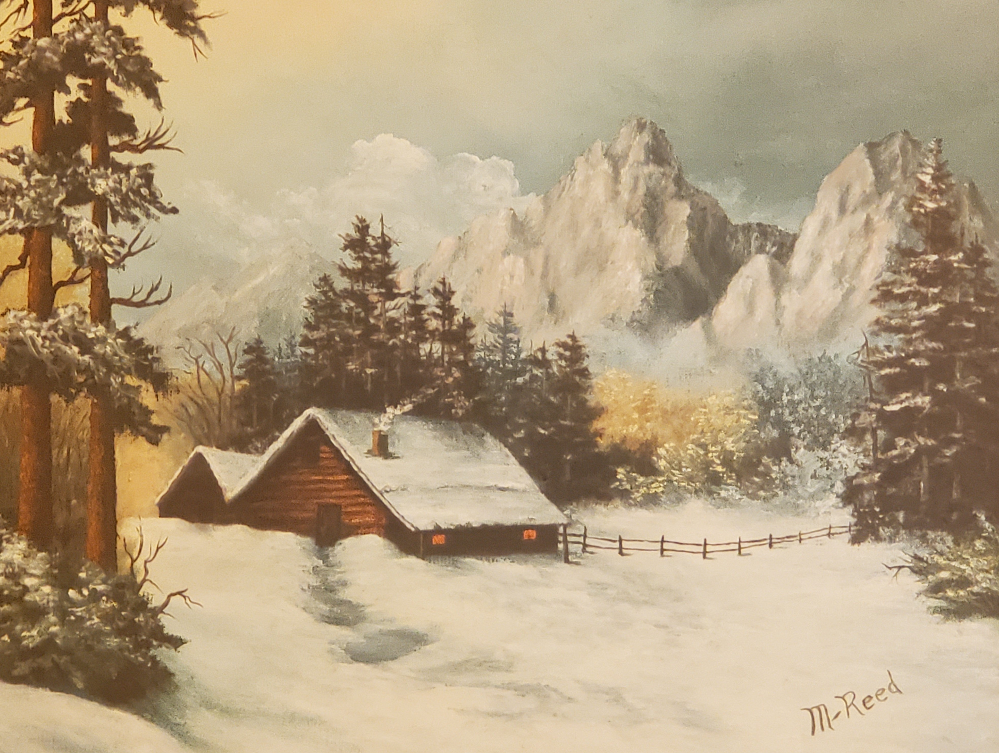

I'm Denise
A programmer

I am a python developer and budding pottery aficionado. My python is much better than my pottery at this point. I'm also learning ansible and HTML in my spare time.
I started learning Python to get around many hours of 'spreadsheet gymnastics' and discovered that I love it. Its like one big series of logic-puzzles!

There can never be enough books!
I ❤️ to read. Fiction, SciFi, Fantasy, and even a technology book or two.


I love swimming, pottery, scrap-booking, cooking, cross-stitch, logic-puzzles and hiking.